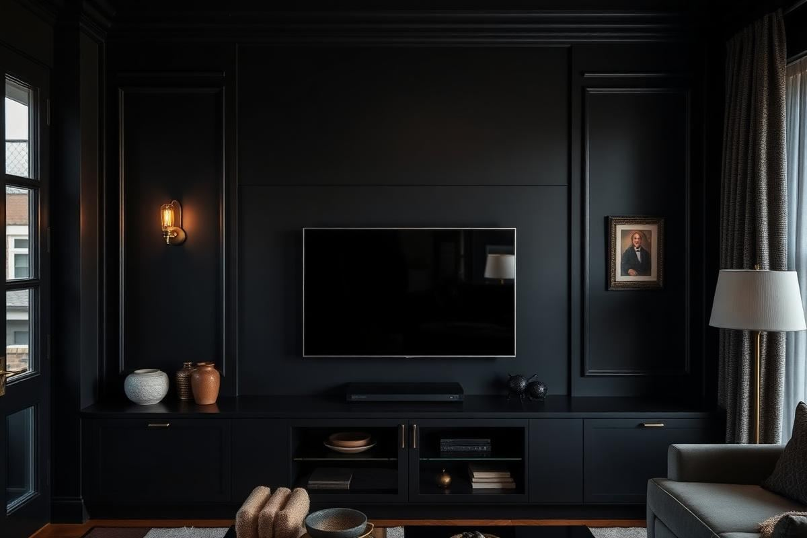

Living Room TV Wall Ideas That Look Designed, Not Techy

A television is the one object in a living room that nobody chooses for its looks, and it is usually the largest thing on the wall. On shoots we treat it exactly like a piece of art we cannot move: instead of pretending it is not there, we build the wall around it so the eye reads the whole composition rather than a black rectangle floating in the middle of nowhere. That shift in thinking is what separates a room that looks styled from a room that looks like a showroom for electronics.
Why most TV walls go wrong
Three things cause almost every awkward TV wall I am asked to fix. The screen is hung too high, so everyone in the room tilts their chin up. It sits in the middle of a large pale wall with nothing around it, so the contrast between black screen and white plaster is at its harshest. And the cables run visibly down to a console that is too small for the width of the screen, which makes the whole arrangement look top-heavy.
Every one of those is fixable in an afternoon, and none of them require a joiner. Start with height, because it changes how the rest of the wall needs to be handled.
Get the mounting height right
Sit on your sofa in your normal slouch and have someone mark the wall at your eye level. That mark is where the centre of the screen should sit, not the bottom edge. In a standard living room with a 17-inch seat height, that usually puts the centre of the screen between 40 and 44 inches from the floor. For a 55-inch television, the bottom edge lands around 28 inches — noticeably lower than most people expect, and dramatically more comfortable over a two-hour film.
- Measure eye level while seated, not standing — this is the single most common error.
- Above a fireplace, only mount if the mantel is under 48 inches and use a pull-down bracket.
- Leave 4 to 6 inches of clear wall between the bottom of the screen and any console top.
- Check the screen is centred on the seating group, not on the wall, if the two differ.
The dark wall trick
The fastest, cheapest way to make a television disappear is to paint the wall behind it a deep, matt colour. Charcoal, ink blue, forest green, and near-black all work because they reduce the contrast between the screen and its background from extreme to almost nothing. Use a fully matt finish — any sheen will bounce light off the wall and undo the effect. One wall in a mid-tone room reads as a deliberate design decision, not a compromise, and the rest of the room feels warmer for having a dark anchor in it.

Millwork and built-ins
If you have the budget for joinery, a recessed niche is the gold standard. The screen sits flush with the face of the cabinetry, cables run inside the carcass, and the shelves either side give the eye somewhere else to go. Ask for the niche to be built 2 inches wider and taller than the screen so you can upgrade in a few years without recutting the panel, and specify a removable back panel for access to the sockets.
A budget alternative that looks close to built-in: two tall bookcases either side of the screen, painted the same colour as the wall, with a low run of closed storage bridging them. Filling the wall corner to corner is what sells the effect, so choose bookcase depths that match your console rather than mixing 12-inch and 18-inch pieces.
The gallery wall approach
Surrounding the television with framed art turns it into one element in a group rather than the main event. The rule that makes this work: use frames in a single finish, keep the gap between frames consistent at about 2 to 3 inches, and treat the screen as the largest frame in the arrangement. Avoid placing art directly above the screen unless you have at least 10 inches of clearance — anything tighter reads as crowded.
Choose art that is quiet in tone. Black and white photography, botanical prints, and abstract works in muted colours all sit comfortably beside a dark screen. High-contrast, brightly coloured pieces will fight with whatever is playing.
Cables, soundbars, and devices
Nothing undermines a considered wall like a dangling HDMI lead. If you can open the wall, use a recessed dual-socket kit with a brush plate above and below the screen so cables travel inside the cavity. If you cannot, a paintable cable raceway costs very little and, once painted the same colour as the wall, is genuinely invisible from three feet away.
- Mount the soundbar directly under the screen with a 2 to 3 inch gap so it reads as one unit.
- Keep streaming boxes and consoles in a closed cabinet with a ventilated back panel.
- Use velcro ties rather than zip ties so you can add a device without recabling everything.
- Add a smart plug so the whole media stack switches off from one point at night.
Styling the shelves around it
Shelves flanking a television should be styled more sparsely than shelves anywhere else in the house, because you already have a busy focal point. Aim for roughly 60 per cent full and lean toward objects with soft, rounded silhouettes: ceramic vessels, a small stack of books laid flat, a trailing plant. Skip anything reflective at screen height, since glass and polished metal will catch the light from the picture and pull your eye sideways all evening.
One thing I always add is a light source at the same level as the screen — a small lamp or a picture light on the adjacent shelf. Watching a bright screen in a dark room is tiring, and a warm 2700K bulb behind or beside the television reduces the contrast your eyes have to handle.
Three budget versions that work
- Under 100: paint the wall matt charcoal, lower the bracket to seated eye level, and add a paintable cable raceway.
- Under 500: add a wide low console that extends at least 6 inches beyond the screen on each side, plus two framed prints and a small lamp.
- Under 1500: flank the screen with two flat-pack bookcases painted wall colour, bridge them with closed storage, and fit a picture light above.
Whichever route you take, judge the result from the sofa rather than the doorway. A TV wall is designed for one viewpoint, and the moment you check it from the seat you actually use, the corrections become obvious.
Key takeaways
- Mount the screen centred at seated eye level, not standing height.
- A matt dark wall is the cheapest way to make a television recede.
- Fill the wall corner to corner so the screen is one element among several.
- Hide cables in a painted raceway or recessed socket kit.
- Style flanking shelves sparsely and add a warm light at screen height.
Frequently asked questions
How high should a TV be mounted in a living room?
Centre the screen at your seated eye level, which is usually 40 to 44 inches from the floor. For a 55-inch screen that places the bottom edge around 28 inches up.
Should I mount my TV above the fireplace?
Only if the mantel is below 48 inches and you use a pull-down bracket. Above that, the viewing angle causes neck strain and heat can shorten the screen's life.
What colour should a TV wall be painted?
A deep matt shade — charcoal, ink blue, or forest green. Matt finishes reduce reflection and the low contrast makes the black screen far less noticeable.
How do I hide TV cables without opening the wall?
Use a paintable cable raceway painted in the wall colour, and route power through a recessed socket kit if you can reach the cavity from behind.
How wide should the console under a TV be?
At least 6 inches wider than the screen on each side. A console narrower than the television always looks unstable.

Sophia Bennett is a certified interior stylist and the senior editor at Styleire. She has spent more than eight years helping homeowners and renters create warm, functional interiors, with hands-on experience across small city apartments and family homes. Her work has been informed by close collaboration with independent designers, craftspeople, and product testers.
View full profile →Related reading

Living Room Lighting Ideas: Layers That Feel Right
Living Room Lighting Ideas: Layers That Feel Right — a clear, editor-tested guide covering the essentials without the filler.

Living Room Color Schemes That Age Well
Living Room Color Schemes That Age Well — a clear, editor-tested guide covering the essentials without the filler.

How to Style a Coffee Table: A Stylist's Formula
Coffee table styling is not decoration for its own sake — it is composition. Here is the formula, the measurements, and the everyday version that survives real life.